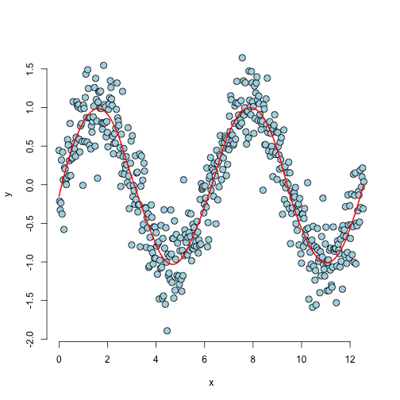
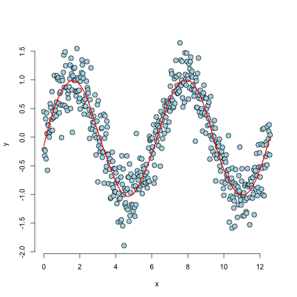

A good question. It is a piecewise (usually polynomial) function used to fit a continuous function through complex data, instead of using a single high-order polynomial function.
Here's what a spline looks like:

Marshall Lee
A good question. It is a piecewise (usually polynomial) function used to fit a continuous function through complex data, instead of using a single high-order polynomial function.
Here's what a spline looks like:

What are our variables?
What is our outcome?
What is our objective?
This could potentially have application in something like HFT, where a decently accurate prediction of a small incremental move in a security price, executed many times, could (possibly significantly) beat larger batch trades made on much more widely-spaced increments...
it could yield absolutely nothing of practical use, hence experimentation to see if it might!